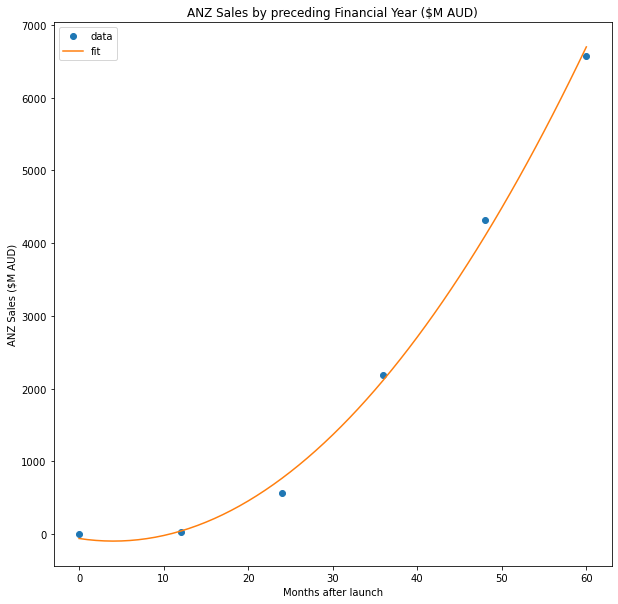
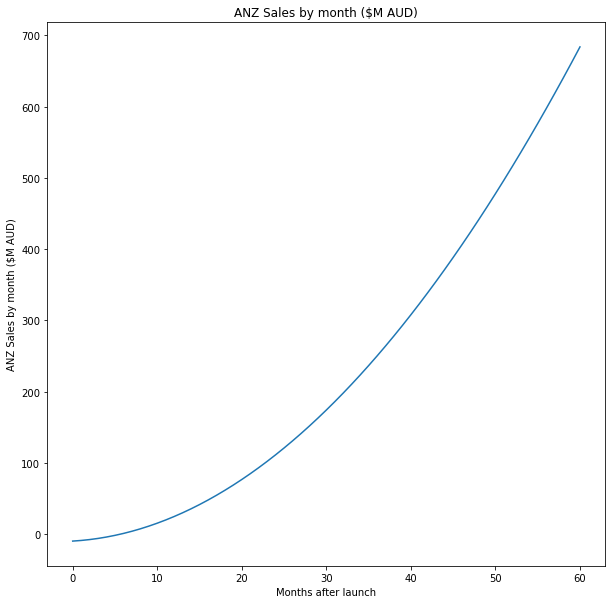
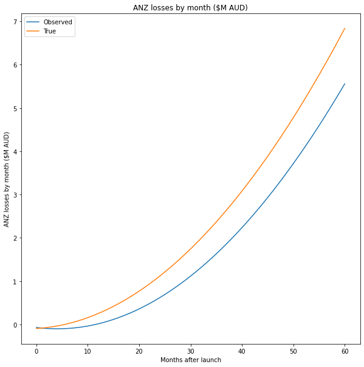
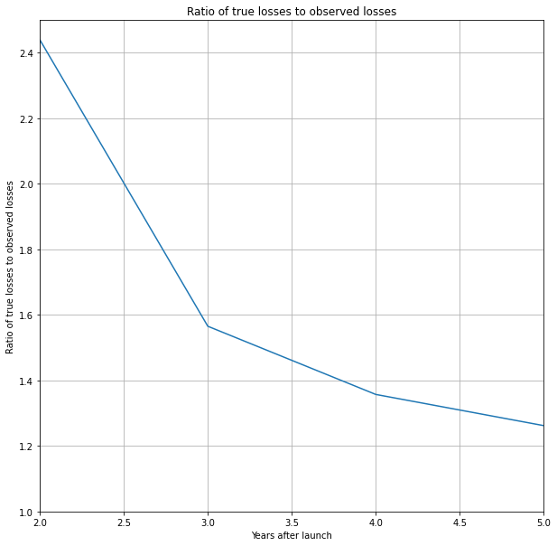

%matplotlib inline
import matplotlib.pyplot as plt
import numpy as np
from io import StringIO
import pandas as pd
import scipy.optimize
plt.rcParams["figure.figsize"] = (10,10)
from warnings import filterwarnings
filterwarnings('ignore')The Context
The thesis of this post is pretty simple. There is a delay between customers making a transaction and when Afterpay realises they have defaulted. Because of this delay, combined with the rapid growth in the total value of transactions, defaults may be artificially reduced as a percentage of transaction value.
Important
Obviously, I need a disclaimer. If you use anything I say as the basis for any decision, financial or otherwise, you are an idiot.
The Model
First off, let’s load in a bunch of libraries.
While reading through Afterpay’s releases to the markets, I came across this chart, which appears on page 3 of this release. Let’s use this to build a simple quadratic model of the reported sales.

Loading the data
#Underlying sales
csv_data = StringIO('''anz_underlying_sales_value,date,month_count
0,FY15,0
37.3,FY16,12
561.2,FY17,24
2184.6,FY18,36
4314.1,FY19,48
6566.9,FY20,60''')
df = pd.read_csv(csv_data, sep=",")Fitting a curve
Let’s first fit quadratic:
def quadratic(t, a, b, c):
y = a * t**2 + b * t + c
return y
xdata = df.month_count.values
ydata = df.anz_underlying_sales_value.values
popt, pcov = scipy.optimize.curve_fit(quadratic, xdata, ydata)
print(popt)[ 2.17012649 -17.61639881 -58.725 ]x = np.linspace(0,60, 61)
y = quadratic(x, *popt)
plt.plot(xdata, ydata, 'o', label='data')
plt.plot(x,y, label='fit')
plt.title('ANZ Sales by preceding Financial Year ($M AUD)')
plt.xlabel('Months after launch')
plt.ylabel('ANZ Sales ($M AUD)')
plt.legend(loc='best')
plt.show()
Delays in reporting.
So we found that we could model the annual reported sales as \[2.170 t^2 - 17.61t - 58.725\]
The instantaneous sales rate is \[0.1808t^2 + 0.7021t -9.36\].
Don’t worry about how I arrived at this; I will show how in the appendix of this post.
t = np.linspace(0,60, 61)
sales = 0.1808*t**2 + 0.7021* t - 9.36
plt.plot(sales)
plt.title('ANZ Sales by month ($M AUD)')
plt.xlabel('Months after launch')
plt.ylabel('ANZ Sales by month ($M AUD)')
plt.show()
Now let’s model a delay of 6 months between when the transaction happens and when Afterpay finally realised there was a default.
From this, we can see a significant difference between the actual rate at which losses occur and the rate at which we observe them occurring at any time.
delay = 6 #months
true_loss_rate = 0.01
losses_true = true_loss_rate*(0.1808*t**2 + 0.7021* t - 9.36)
losses_observed = true_loss_rate*(0.1808*(t-delay)**2 + 0.7021* (t-delay) - 9.36)
plt.plot(losses_observed,label='Observed')
plt.plot(losses_true,label='True')
plt.legend()
plt.title('ANZ losses by month ($M AUD)')
plt.xlabel('Months after launch')
plt.ylabel('ANZ losses by month ($M AUD)')
plt.show()
Now let’s integrate by financial year.
def integrate_by_year(y):
integrated = np.array([0,np.sum(y[0:12]),np.sum(y[12:24]),np.sum(y[24:36]),np.sum(y[36:48]),np.sum(y[48:60])])
return(integrated)
observed_loss_rate = integrate_by_year(losses_true)/integrate_by_year(losses_observed)
plt.plot(observed_loss_rate)
plt.title('Ratio of true losses to observed losses')
plt.xlabel('Years after launch')
plt.ylabel('Ratio of true losses to observed losses')
plt.ylim(1,2.5)
plt.xlim(2,5)
plt.grid()
plt.show()
Conclusion
In conclusion, we can see the impact of a delay in recognising losses in situations with rapid growth. Even after years of growth, with a six-month delay in recognising losses, the actual losses could be 30-40% higher than reported.
Appendix
Finding an integral
So we found that we could model the annual reported sales as \[2.170 t^2 - 17.61t - 58.725\]
Let’s call this function \(f(t)\)
We want to find the function \(g(t)\), which is the underlying sales rate I claimed was: \[0.1808t^2 + 0.7021t -9.36\].
When integrated over 12 months, this function will give us the annual reported sales.
To help us with the algebraic manipulation, we can use Sympy. An alternative is to do the algebraic manipulation by hand, which is probably faster and more scalable.
import sympy as sym
sym.init_printing(use_unicode=True)
a,b,c,d,t = sym.symbols('a b c d t')We are looking for a quadratic function, the definite integral of which is equal to \[2.170 t^2 - 17.61t - 58.725\]. Let’s start by forming the definite integral.
expr = sym.simplify((a*t**3 + b*t**2 + c*t + d) - (a*(t-12)**3 + b*(t-12)**2 + c*(t-12) + d)) print(sym.collect(expr,t))36*a*t**2 + 1728*a - 144*b + 12*c + t*(-432*a + 24*b)fitted_quadratic = t**2 * 2.17012649 + t*-17.61639881 -58.725Solving for the coefficients
Let’s now form a set of simultaneous equations and solve for each of the coefficients of \(t\).
equations = []
for i in [2,1,0]:
eq = sym.collect(expr,t).coeff(t, i)
coeff = sym.collect(fitted_quadratic,t).coeff(t, i)
equations.append(sym.Eq(eq,coeff))
result = sym.solve(equations,(a,b,c))
print(result){a: 0.0602812913888889, b: 0.351046627916667, c: -9.36169642500000}Finding the derivative
Now all that’s left to do is find the derivative of the indefinite integral.
expr = result[a] * t**3 + result[b]*t**2 + result[c]*t
print(sym.diff(expr, t))0.180843874166667*t**2 + 0.702093255833333*t - 9.361696425Voilà!